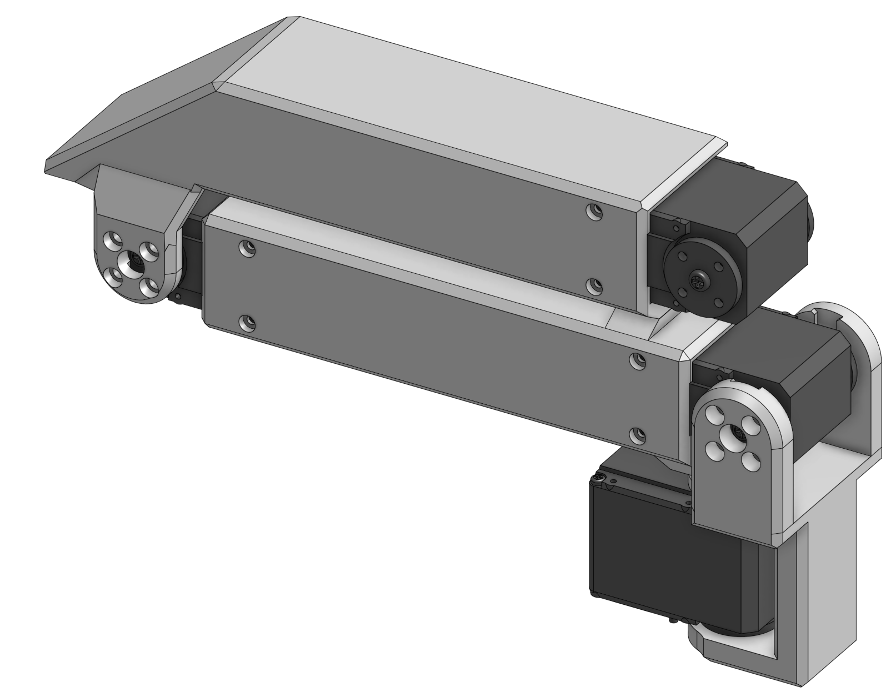
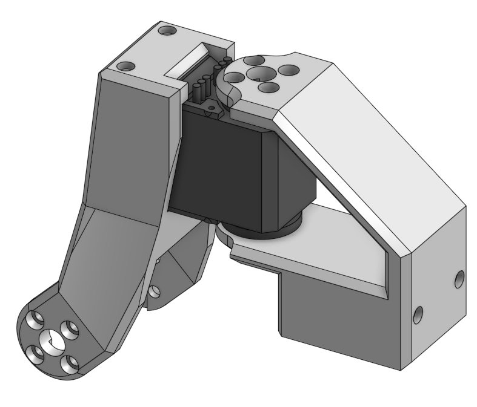
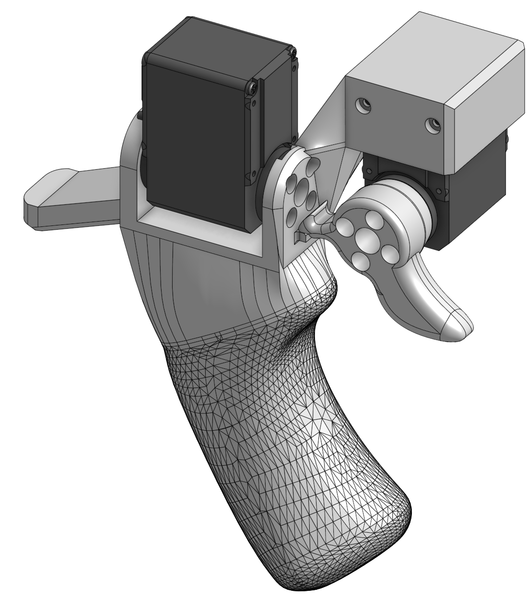
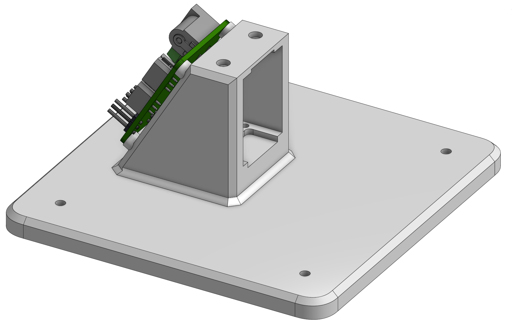

GELLO Assembly Instructions
Assembly SOP for the Parametric GELLO leader arms. Apply each step to every one of the 7
servos / for each arm you're building. An electric screwdriver is recommended. Two screw
sizes are referenced throughout as BIG and SMALL (both take the Philips bit).
Reference files
- 3D-print file:
../hardware/RIGHT+LEFT_GELLO.3mf - Bill of materials:
../hardware/BOM.md
Overview
Each arm builds up as four sub-assemblies:
| Group | Parts | |
|---|---|---|
| Group 1 | L1, L2, L3 |  |
| Group 2 | L4, L5 |  |
| Group 3 | handle, trigger |  |
| Group 4 | base + board |  |
Step 0 — Prepare the servos (×7 per arm)
-
Ensure you have 7 Feetech STS3215 servos per arm, including the required accessories
(mounting screws + metal servo horns). -
Using a Philips screwdriver, remove the 4 screws that secure the servo's top plate (use
pliers if needed to free the plate).- Keep track of which cover came off which servo, and return each cover to its own servo —
mismatched covers may not fit back together perfectly.
- Keep track of which cover came off which servo, and return each cover to its own servo —
-
Remove the two interior gears from the servo. This decouples the motor from the output
shaft so the joint is freely back-drivable — the core GELLO principle.- Place the gears on a paper towel and store them as spares (in the GELLO box).
- The interior is lubricated, so work carefully to avoid a mess.
-
Replace the cover and screw the four Philips screws back in.
-
Identify the 2 servo horns per motor (toothed + non-toothed):
-
Mount the toothed horn on the toothed end of the servo — teeth lined up, pushed on
firmly until flush, secured with a BIG screw. -
Mount the non-toothed horn on the opposite side, ring facing the servo, pushed on
flush. Secure with the screw that has the washer (1 per motor); some resistance is
normal.
-
Step 1 — Assemble each group
Notes before you start:
- Linkages don't need all screws — ~2 per side is adequate.
- Press-fit acceptances are orientation-dependent (they fit one way); inner guide mounts are
omnidirectional. Keep all wire connectors pointing the direction the steps specify, or
you'll have to redo steps. - If you get lost, fall back on the reference images above and below.
Group 1 (L1, L2, L3)
-
Press-fit servos into either end of L2; secure each side with SMALL screws.
-
Press-fit a servo into the straight end of L3; secure each side with SMALL screws.
-
Using L3's inner guides (all wire connectors pointing the same direction), slide L3 onto
the end of L2 that has no hardstops (the plain rectangular extrusion); secure each side
with BIG screws. -
Slide a servo into the bottom of L1 (this connects to the base) with the wire connector
pointing down into the base, away from the rest of the assembly; secure each side with BIG
screws. -
Slide L2's open end onto the top of L1; secure each side with BIG screws, ensuring L2
extends back along the length of L1's servo.
Group 2 (L4, L5)
- Press-fit a servo into L4; secure each side with SMALL screws.
- Slide L5 onto the servo; secure with BIG screws, with its press-fit acceptance pointing
opposite the wire connector.
Group 3 (handle, trigger)
- Slide a servo into the top of the handle, wire connectors pointing away from where the
trigger installs; secure each side with BIG screws. - Press-fit a servo into the trigger mount on the handle; secure each side with SMALL screws.
- Secure the trigger to the press-fit servo with BIG screws.
- Double-wrap a rubber band around the handle and slide it up to just below the bump; loop
one of the two loops around the trigger. Confirm the trigger returns to its home hardstop
and stops against the bump at the other limit.
Group 4 (base + board)
- Heat-set M3×4×5 inserts into the back of the base (where the board mounts) so they sit
flush with the 4 rings. - Secure the board to the base with four 6–8 mm M3 bolts into the heat-set inserts.
Step 2 — Connect the groups
Group 3 → Group 2: Press-fit the servo coming out of the handle (Group 3) up into the
open receiving end on L5 (Group 2); secure the open side with SMALL screws.
Groups 2 + 3 → Group 1: Slide Groups 2 and 3 onto the open servo on L3; secure each side
with BIG screws. Glue the hardstop home onto M1 — this is the female homing mechanism.
Do Step 3 (wiring) before attaching the base — it's much easier to wire first.
Groups 1 + 2 + 3 → base: Press-fit the servo into the base; secure each side with SMALL
screws. Move the other linkages out of the way to make room.
Step 3 — Wiring
- The servos are daisy-chained one to the next (e.g. trigger downstream → handle upstream
→ … ), and the chain terminates at the board. - A screwdriver helps push the wires into the sockets; cables only fit one way.
- Connect the board to the host device via USB-C.
- Upstream/downstream order doesn't technically matter — this SOP fixes an order only for
consistency between GELLOs.
Step 4 — Verification
See the top-level README for full software bring-up.
- Power the board from an external DC source (~7.4V @ 5A) and connect it to the host via USB-C.
- Assign each servo an ID with
feetech_servo_changeid.py— the
servos are all daisy-chained, so:- Fresh servos ship with the same default ID; assign IDs before wiring the full chain if
possible. - Fully disconnect a servo from its neighbors before setting its ID — nothing plugged into
either of its two ports except the single cable to the board (either port works; both are
electrically identical).- This isn't only about duplicate factory defaults: the write broadcasts to every
powered servo on the bus, so a servo you already assigned will be overwritten if it's
still on the chain.
- This isn't only about duplicate factory defaults: the write broadcasts to every
- Index IDs from 0 (base) to 6 (gripper/trigger), matching each servo's position in the
chain. - Set
SERIAL_PORTat the top of the script to your board's port (mac:ls /dev/cu.*;
linux:/dev/ttyUSB0). - Run
python feetech_servo_changeid.py <id>and confirm it printsSucceed to set id: <id>. - Label each servo with its ID before moving to the next, so they don't get mixed up.
- Once all 7 are set, wire the full chain and use
feetech_gui.py(or
feetech_scan.py) to confirm IDs 0–6 all
respond and none are still on the factory default. - If reusing a servo pulled from another arm, double-check its old ID first — it can collide
with the new chain.
- Fresh servos ship with the same default ID; assign IDs before wiring the full chain if
Mirrored from Parametric's internal Notion assembly SOP. Images are committed under
assembly/img/.